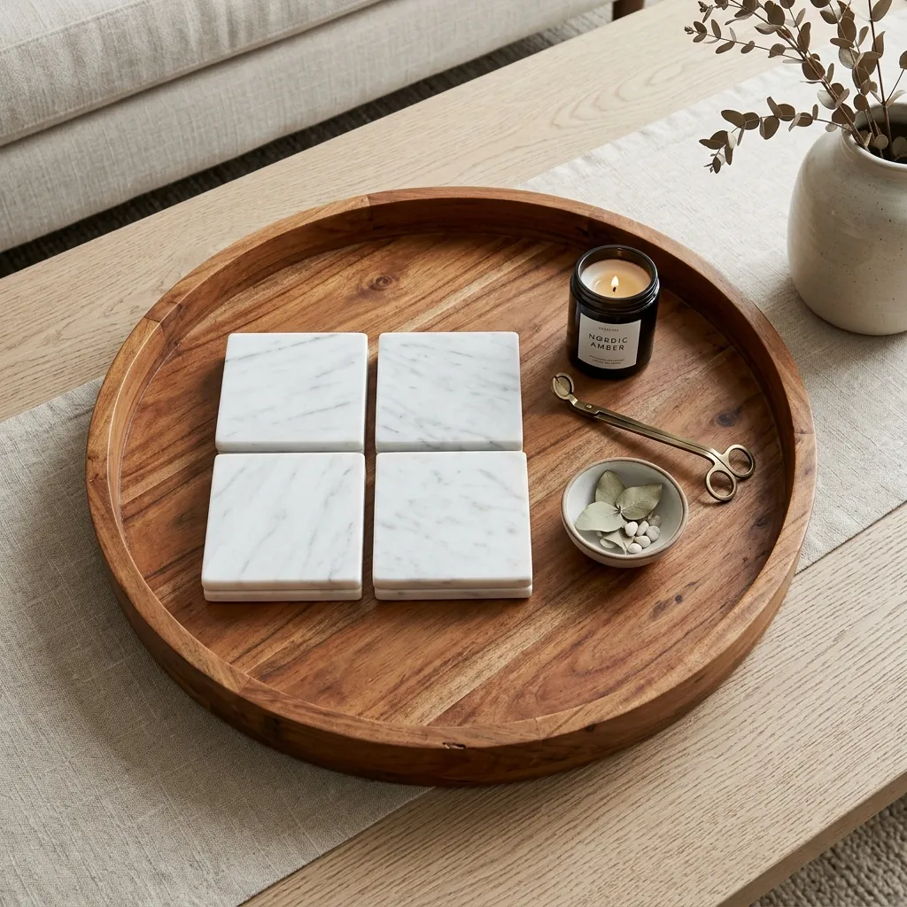
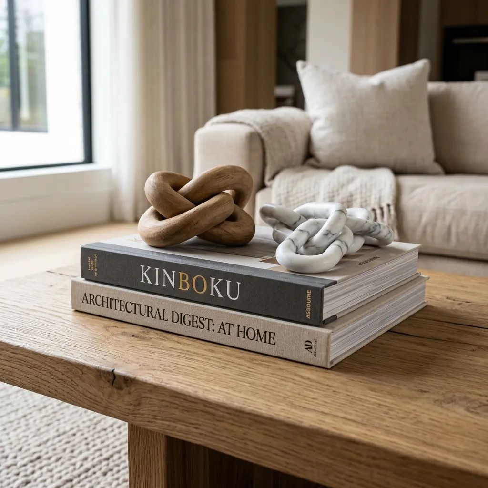
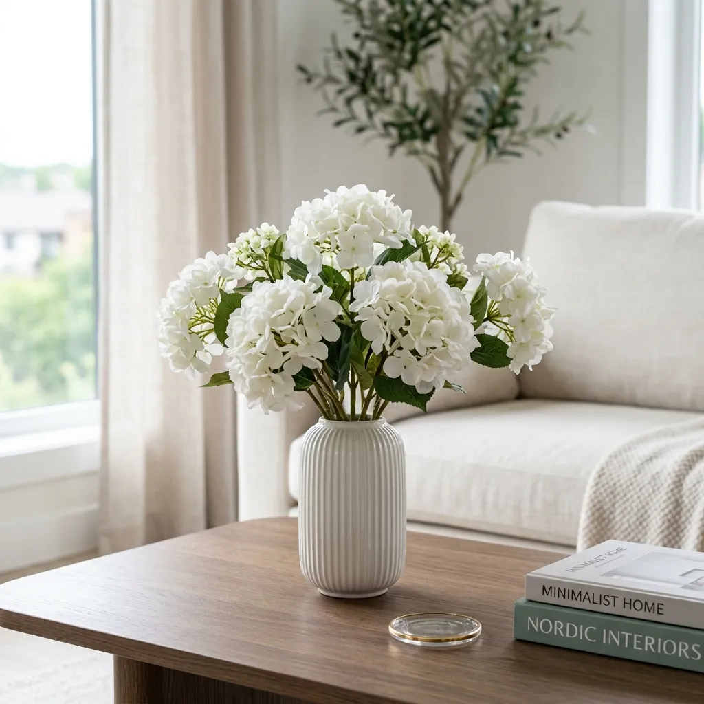
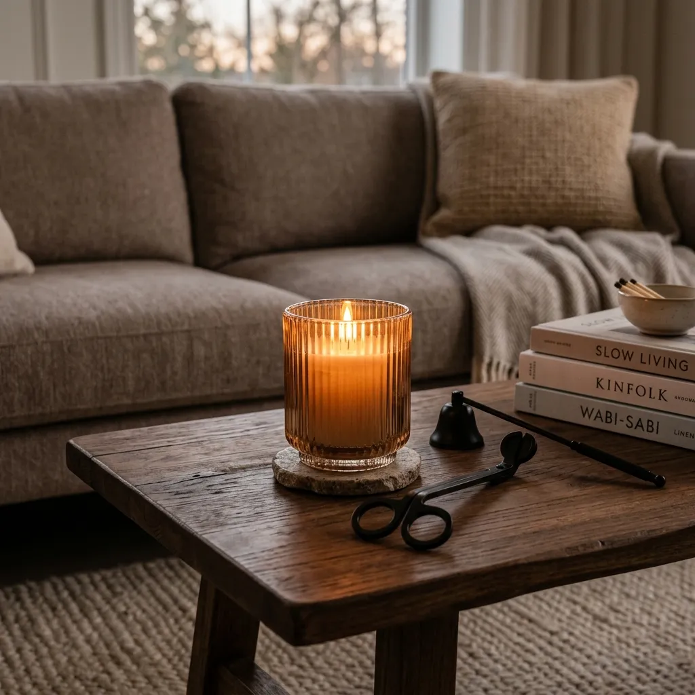

How to Style a Neutral Coffee Table Like an Interior Designer
Learn how to style a neutral coffee table like a professional interior designer. Master the art of layering trays, books, and sculptural objects.
Your coffee table sits dead center in the most used room of your house. It is the focal point of your living room, yet it is often the most neglected surface. More often than not, it becomes a dumping ground for remote controls, half-empty water glasses, and old mail.
But when you look at high-end interior design magazines or your favorite Pinterest boards, the coffee tables never look like that. They look intentional. They look like curated art displays that somehow still feel livable.
Styling a coffee table isn't about throwing a bunch of random expensive items onto a surface. It is a precise formula involving heights, textures, and grouping. Whether you have a modern round table or a massive rectangular one, the rules remain the same.
Here is your step-by-step guide to styling a neutral, chic coffee table that looks like you hired a professional designer.

Step 1: Anchor the Chaos with a Tray
If you take nothing else away from this guide, remember the power of a tray. A tray acts as a boundary. Instead of having five random items floating aimlessly on your table, placing them inside a tray instantly turns them into a single, cohesive unit.

For a neutral, organic aesthetic, avoid shiny metals or cheap plastics. A large, warm-toned wooden tray is perfect. It adds a natural texture and grounds the entire arrangement.
- The Anchor: Large Round Wooden Tray Decorative
Inside that tray, keep the practical items you actually need, but make them beautiful. Stop letting ugly cardboard coasters ruin your aesthetic. Swap them out for heavy, luxurious marble coasters.
Step 2: Build Height with Books
A flat coffee table is a boring coffee table. You need variation in height to keep the eye moving. The easiest and most sophisticated way to achieve this is by stacking oversized coffee table books.

Choose books that reflect your aesthetic. Large, heavy books with minimalist covers (think neutral tones, black, white, and bold typography) work best. Stack two to three books from largest to smallest.
- Book 1: Architectural Digest Coffee Table Book
- Book 2: Tom Ford Coffee Table Book
But you can't just leave the books bare. You must "top" them. This is where sculptural objects come in. Placing a contrasting texture on top of flat books creates visual interest.
Step 3: Add Life and Organic Shapes
Books are rectangular. Trays are often square or perfectly round. Your table needs something organic and imperfect to break up all those hard geometric lines. It needs life.

A small vase is essential. You do not want a massive centerpiece that blocks the view of the TV or the person sitting across from you. A small, textured ceramic vase is perfect.
While fresh flowers are always beautiful, they die within a week and are expensive to maintain. High-quality faux florals have come a long way. A simple stem of faux white hydrangeas adds softness and a necessary touch of nature.
Step 4: The Glow of Ambience
The final element of a perfectly styled coffee table is lighting. A coffee table isn't just viewed during the day; it needs to look magical at night.

Candles provide both scent and atmosphere. Instead of placing a bare candle jar directly on the wood, elevate it by placing it inside a beautiful glass holder. Fluted glass creates stunning light refractions when the candle is lit.
To finish the look, treat the maintenance tools as decor. Leaving a lighter on the table looks messy. Instead, place a matte black wick trimmer and snuffer set directly on top of your stacked books or inside the tray. It is functional, chic, and signals high-end living.
The Rule of Threes
When placing these elements on your table, remember the Golden Rule of design: The Rule of Threes. Group your items into three distinct sections (e.g., The Tray, The Books, The Vase). Odd numbers are visually appealing and force the eye to move around the table.
Play around with the arrangement, swap out objects with the seasons, and enjoy the feeling of having a living room that looks like it belongs on the cover of a magazine.